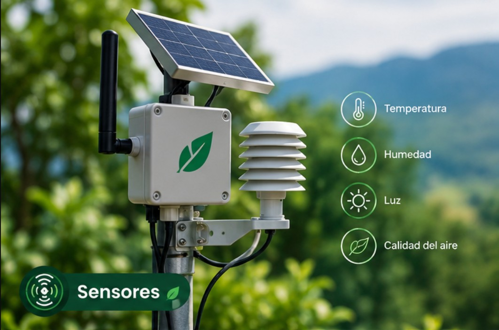

Sensores
Permiten recopilar información sobre las condiciones del entorno y el funcionamiento de diferentes dispositivos eléctricos.
Ver tecnología →Sistemas automatizados para la optimización del consumo energético residencial
Investigación sobre el uso de tecnologías inteligentes para analizar y optimizar el consumo de energía eléctrica en los hogares.
Conocer el proyectoNuestro proyecto analiza cómo los sistemas automatizados pueden contribuir a optimizar el consumo innecesario de energía eléctrica en los hogares.

Permiten recopilar información sobre las condiciones del entorno y el funcionamiento de diferentes dispositivos eléctricos.
Ver tecnología →
Analizamos los patrones de consumo residencial para identificar situaciones relacionadas con el uso innecesario de electricidad.
Ver problema →
La automatización puede apoyar estrategias orientadas a mejorar la gestión del consumo energético residencial.
Ver propuesta →
La investigación estudia el funcionamiento de sistemas automatizados y su posible contribución a la optimización del consumo de energía eléctrica en los hogares.
Se consideran tecnologías como la automatización, la domótica, el Internet de las Cosas (IoT) y la inteligencia artificial.
Conocer másAnalizar cómo los sistemas automatizados basados en sensores y tecnologías inteligentes pueden contribuir a la optimización del consumo de energía eléctrica en los hogares.
Recopilan información relacionada con las condiciones del entorno y el funcionamiento de dispositivos.
Permite automatizar diferentes funciones dentro de los hogares.
Facilita la conexión e intercambio de información entre dispositivos.
Puede ayudar a analizar información y reconocer patrones relacionados con el consumo energético.
El estudio se desarrolla bajo un enfoque cualitativo, con alcance descriptivo y diseño documental.
Consulta de información en bases de datos académicas y repositorios institucionales.
Selección de artículos, revisiones, informes y estudios relacionados con el tema.
Comparación de autores, tecnologías, objetivos, resultados y limitaciones.
Integración de los hallazgos para identificar oportunidades de mejora e innovación.
Los sistemas automatizados pueden facilitar el monitoreo del consumo eléctrico.
Los sensores pueden proporcionar información útil para reconocer patrones de uso.
IoT e inteligencia artificial pueden ampliar las posibilidades de los sistemas de gestión energética.
Se identificaron oportunidades para integrar sensores, automatización y herramientas inteligentes.
De acuerdo con la UPME (2024), durante 2023 la región Andina presentó el mayor consumo de energía eléctrica del sector residencial del país, con 13.865 GWh.
Este dato permite reconocer la importancia de analizar el comportamiento del consumo energético residencial y considerar alternativas tecnológicas para su uso eficiente.
La integración de sensores, IoT e inteligencia artificial permite identificar patrones ineficientes y analizar posibilidades para optimizar el consumo eléctrico residencial.
La investigación establece una base conceptual y metodológica para futuros desarrollos tecnológicos orientados a la gestión energética.
Esta investigación es de carácter documental y no contempla en esta etapa la construcción o implementación del sistema.